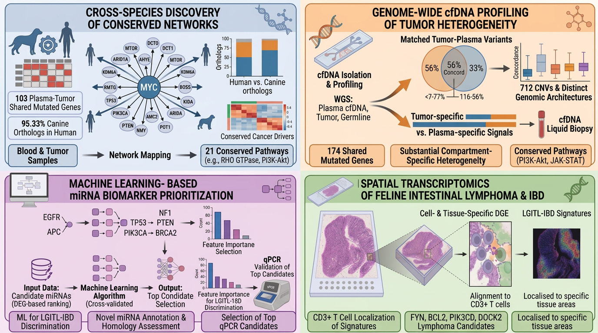
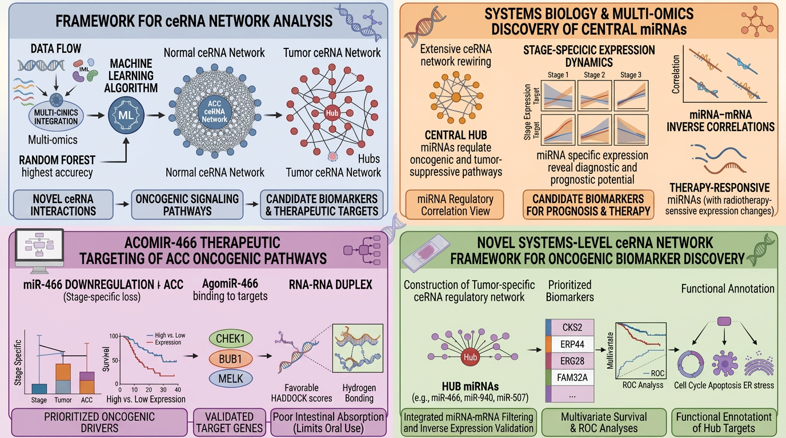
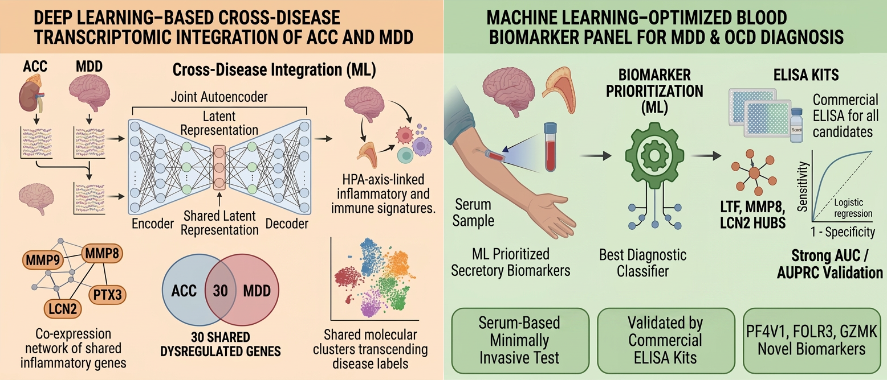

Research Projects
Eleven research projects spanning cancer genomics, ceRNA network biology, and psychiatric-oncology transcriptomics in humans — extended through comparative studies in canine and feline lymphoma, in pursuit of the next generation of cancer biomarkers. At Cornell University and Columbia University.
Mar 2026 – Now
Mar 2026 – Now
Mar 2026 – Now
Mar 2026 – Now

Nov 2024 – Oct 2025
Sep 2023 – Sep 2024
Oct 2022 – Dec 2024
Nov 2022 – Sep 2023

Mar 2025 – Feb 2026
May 2024 – Oct 2025
